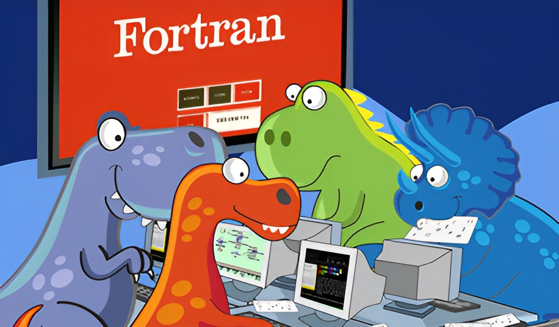
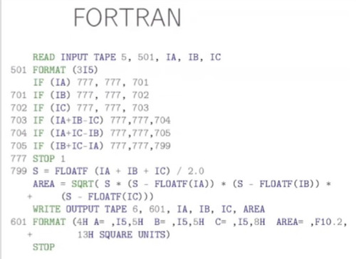

Fortran

Фортран (англ. Fortran) — первый язык программирования высокого уровня, получивший практическое применение. Создан в период с 1954 по 1957 год группой программистов под руководством Джона Бэкуса в корпорации IBM. Название Fortran является сокращением от FORmula TRANslator (формульный транслятор). Фортран широко используется для научных и инженерных вычислений.Его применяют в прикладной математике, вычислительной гидродинамике, финансовом деле. Благодаря Фортрану прогнозируют погоду, исследуют состояние океана.
Fortran даже быстрее Си — поэтому учёные выбирают его для самых скоростных и сложных вычислений. Fortran — отличный язык для разработки приложений, причём не только научных. Его функции позволяют разрабатывать программное обеспечение на более высоком уровне абстракции, чем в Си-подобных языках. А значит, разработчик может фокусироваться на создании приложения, а не погружаться в низкоуровневые вопросы и бороться с ограничениями языка. При этом скорость исполнения остаётся космической. Стандартизация сделала Fortran идеальным для сложных вычислений. И даже сегодня это самый популярный язык для вычислений.
